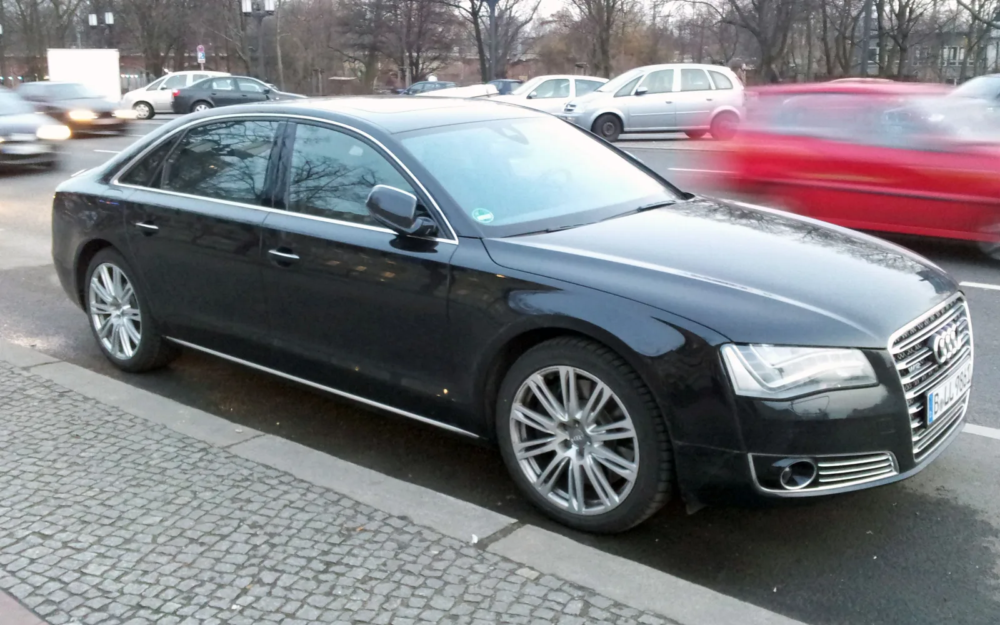
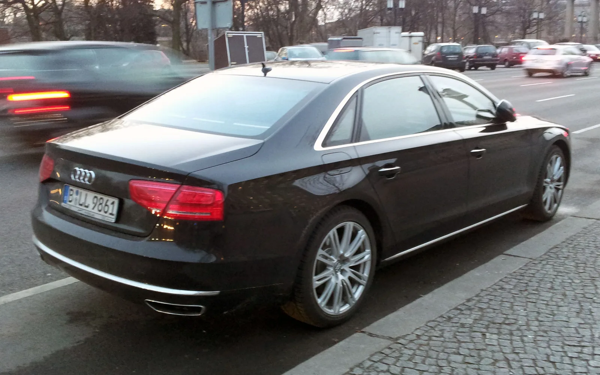
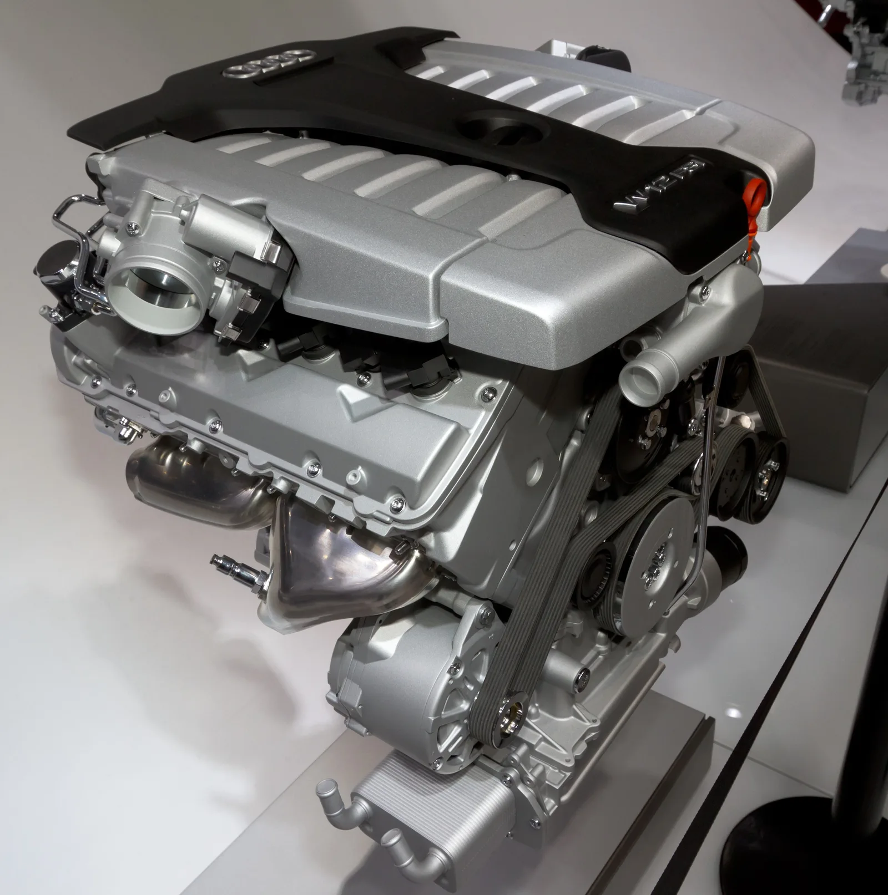
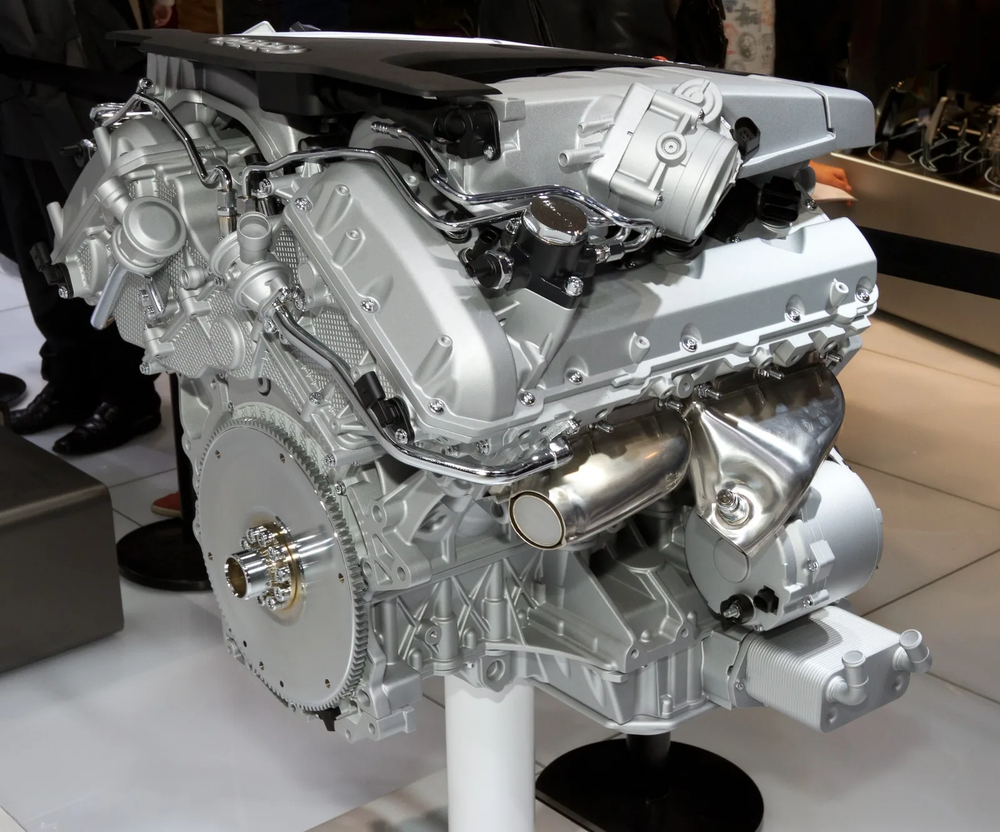
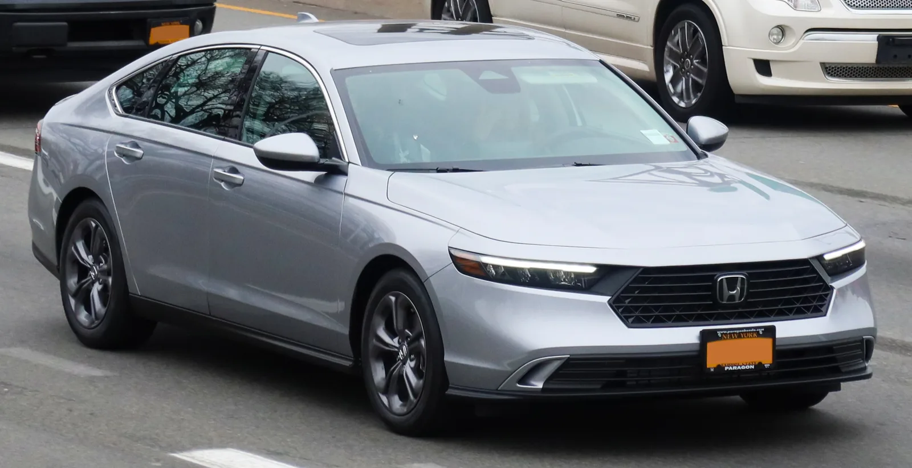

▲ 12기통 W12 엔진을 얹은 아우디의 마지막 플래그십, A8 L W12 ⓒ Wikimedia Commons
1. "이 가격이면 신차 대신 12기통을?"…어코드보다 싼 아우디 플래그십
미국 자동차 매체 카버즈(CarBuzz)에 따르면, 12기통 W12 엔진을 얹은 아우디의 마지막 플래그십 세단 '2016년식 아우디 A8 L W12'가 중고 시장에서 약 28,500달러(약 3,900만원)에 거래되고 있다. 이는 2026년형 혼다 어코드 최저 트림인 LX(28,395달러, 약 3,890만원)보다도 약 1,000달러 저렴한 수준이다. 출시 당시 137,900달러(약 1억 8,900만원)에 달했던 아우디 최고급 세단이, 10년이 지난 지금은 준중형 세단 기본형 가격에도 못 미치게 된 셈이다.
아우디 A8 L W12는 아우디 라인업 최상급 모델로, 6.3리터 W12 엔진에서 500마력과 463파운드-피트(약 627Nm)의 토크를 뽑아내던 차량이다. 벤틀리 콘티넨탈 GT에도 얹히는 동일 계열 엔진을 사용했을 만큼, 당대 아우디 기술력의 정점을 상징하는 모델이었다. 그런 차가 신차 대비 79.3%, 약 110,000달러(약 1억 5,000만원)에 달하는 가치를 잃고 중고 시장에서는 '대중차보다 싼 슈퍼세단'으로 전락한 것이다.

▲ 뒷좌석 리무진 사양까지 갖췄던 A8 L W12는 독일 총리 공식 의전차량으로도 쓰였다 ⓒ Wikimedia Commons
2. W12 엔진, 아우디 플래그십의 자존심이었다
아우디의 W12 엔진은 2001년 1세대 A8(D2)에 처음 얹히며 등장했다. V6 엔진(VR6) 두 개를 좁은 각도로 결합해 'W'자 형태로 배치한 독특한 구조로, 부피는 V12보다 작으면서도 12기통 특유의 부드러운 출력 전달을 구현한 것이 특징이었다. 미국 시장에는 2005년 2세대 A8부터 도입됐으며, 등장 초기 444마력·430파운드-피트였던 출력은 마지막 세대(D4)에 이르러 500마력(유럽 사양 기준 585마력·627파운드-피트)까지 끌어올려졌다.
W12는 단순한 고출력 엔진을 넘어, 아우디가 메르세데스-벤츠 S클래스나 BMW 7시리즈 같은 경쟁 플래그십과 어깨를 나란히 하겠다는 상징적 의미를 지닌 파워트레인이었다. 렉서스 LS 등 경쟁 플래그십들이 갖추지 못한 '12기통 세단'이라는 희소성 자체가 아우디 A8의 최상급 포지셔닝을 뒷받침했다.
📍 아우디 W12 엔진 요약
2001년 A8(D2)에 첫 탑재 → 2005년 미국 시장 도입 → 6.0L에서 6.3L로 배기량 확대 → 벤틀리 콘티넨탈 GT와 엔진 공유 → 2017년식을 끝으로 미국 시장에서 단종.
3. 왜 사라졌나…전동화 전환이 앞당긴 W12의 퇴장
아우디는 2018년 제네바 모터쇼에서 W12 엔진의 단종을 공식화했다. 당시 아우디 연구개발 총괄이었던 페터 메르텐스(Peter Mertens)는 미국 매체 카앤드라이버와의 인터뷰에서 신형(D5) A8이 "W12를 탑재하는 마지막 모델이 될 것"이라고 밝혔다. 실제로 4세대(D5) A8부터는 W12 트림이 라인업에서 완전히 빠졌고, 미국 시장 기준으로는 2017년식을 끝으로 W12 엔진 탑재 차량의 판매가 종료됐다.
단종의 배경에는 강화되는 배출가스 및 연비 규제, 그리고 전동화로 급격히 방향을 트는 업계 전반의 흐름이 자리한다. 12기통 엔진은 구조가 복잡해 생산 단가가 높고, 정비 비용도 상대적으로 크다. 여기에 플러그인 하이브리드나 마일드 하이브리드 시스템을 얹은 V8·V6 엔진이 비슷한 수준의 정숙성과 토크를 구현하면서도 연비와 배출가스 기준을 훨씬 수월하게 통과할 수 있게 되자, W12를 유지할 실익이 크게 줄었다. 아우디의 모기업 폭스바겐그룹 내에서도 벤틀리를 제외한 브랜드들이 대형 다기통 엔진에서 손을 떼는 흐름이 이어지며, A8의 12기통 시대는 자연스럽게 막을 내렸다.

▲ 2011년 도쿄모터쇼에 전시된 아우디 6.3리터 W12 FSI 엔진 ⓒ Wikimedia Commons
4. 럭셔리 세단이 준중형차보다 싸진 이유
W12 단종만으로는 이 정도의 가격 폭락을 설명하기 어렵다. 진짜 이유는 럭셔리 대형 세단 특유의 급격한 감가상각 구조에 있다. 고급 세단은 신차 시절 각종 첨단 옵션과 브랜드 프리미엄이 가격에 반영되지만, 연식이 쌓일수록 정비 비용 부담(12기통 엔진은 점화플러그 교체 하나에도 다수의 부품 탈거가 필요할 만큼 정비가 까다롭다)과 세단 시장 자체의 위축이 겹치며 중고가가 신차 대비 훨씬 가파르게 떨어진다.
| 구분 | 아우디 A8 L W12 (2016년식) | 2026년형 혼다 어코드 LX |
|---|---|---|
| 구동방식/엔진 | 6.3L W12, 500마력 | 1.5L 터보 4기통, 192마력 |
| 신차 당시 가격 | 약 137,900달러 | 28,395달러(2026년형 기준) |
| 현재 시세 | 약 28,500달러(중고) | 28,395달러(신차) |
| 가치 하락률 | 약 79.3% | 해당 없음(신차) |
여기에 럭셔리 플래그십 세단 특유의 낮은 수요도 한몫한다. SUV 선호가 뚜렷해진 시장에서 대형 세단, 특히 단종된 엔진을 얹은 구형 플래그십을 원하는 구매층은 극히 제한적이다. 결국 희소성 있는 12기통 엔진이 오히려 '유지비 부담이 큰 애물단지'로 인식되며 중고가를 끌어내린 것이다.
실제로 W12를 얹은 구형 A8을 저렴하게 들여오려는 구매자가 가장 먼저 부딪히는 벽은 정비 비용과 부품 수급이다. W12는 협각으로 배치된 두 개의 VR6 뱅크가 하나의 실린더 헤드 아래 몰려 있는 구조라, 뒷줄 점화플러그나 코일을 교체하려면 흡기 매니폴드는 물론 경우에 따라 엔진 마운트까지 들어내야 하는 경우가 많다. 이 때문에 미국 정비업계에서는 W12 차량의 스파크플러그 교체 공임만 수백 달러에서 1천 달러 이상이 드는 것으로 알려져 있으며, 타이밍 체인이나 워터펌프 같은 대형 정비는 그보다 훨씬 비싸다. 여기에 생산량 자체가 적었던 탓에 순정 부품 재고도 넉넉지 않아, 단종된 지 10년 가까이 지난 지금은 일부 부품을 해외에서 직구하거나 벤틀리 콘티넨탈 GT용 부품과 호환되는 항목을 찾아 대체해야 하는 경우도 있다. 중고차 업계가 "싼 값에 사도 유지비로 발목 잡힌다"고 입을 모으는 이유다.

▲ 뒤쪽에서 본 아우디 6.3리터 W12 FSI 엔진. 좁은 엔진룸에 부품이 밀집해 정비 난도가 높다 ⓒ Wikimedia Commons
5. 마지막 12기통 세단이 남긴 것
아우디 A8 L W12의 몰락은 단순한 중고차 가격 이야기가 아니라, 내연기관 플래그십 세단의 시대가 저물고 있음을 보여주는 상징적 사례다. 12기통 엔진이라는 기계적 낭만과 희소성은 더 이상 시장에서 프리미엄으로 인정받지 못하고 있으며, 그 자리는 전동화 파워트레인과 첨단 편의 기능이 대체하고 있다. 실제로 아우디는 현재 A8 후속을 전동화 플래그십으로 전환하는 전략을 추진 중이며, 벤틀리를 제외한 폭스바겐그룹 브랜드에서 W12급 다기통 엔진이 재등장할 가능성은 거의 없다는 것이 업계의 중론이다.
아우디는 차세대 플래그십을 폭스바겐그룹의 프리미엄 전기차 전용 플랫폼 PPE(Premium Platform Electric) 기반으로 전환하는 작업을 진행 중이며, Q6 e-트론을 시작으로 A6 e-트론 등 전동화 라인업을 순차 확대해왔다. 차세대 A8 역시 순수 전기 또는 전동화 중심 파워트레인으로 재편될 것이 유력시되는데, 이는 배출가스 규제 대응뿐 아니라 정숙성과 즉각적인 토크감이라는 W12의 장점을 모터 구동계가 오히려 손쉽게 구현할 수 있다는 판단이 깔려 있다. 다만 브랜드 정체성이었던 '기계적 화려함'을 전동화 시대에 어떻게 계승할지는 아우디가 계속 풀어야 할 숙제로 남아 있다.
역설적으로, 이 같은 가격 폭락은 12기통 플래그십 세단을 합리적인 가격에 경험해보고 싶은 소비자에게는 기회가 되기도 한다. 다만 정비 비용과 부품 수급 문제를 감안하면 신중한 접근이 필요하다는 게 중고차 업계의 공통된 조언이다. 카버즈 원문은 아래에서 확인 가능합니다. CarBuzz 원문 기사 바로가기

▲ 아우디 A8 L W12보다 비싼 신차, 2026년형 혼다 어코드 ⓒ Wikimedia Commons